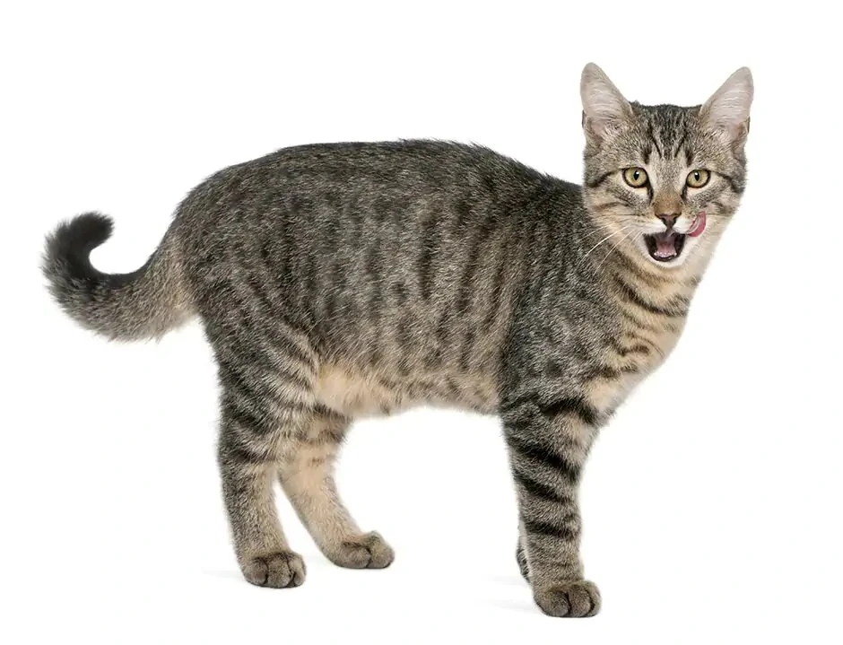
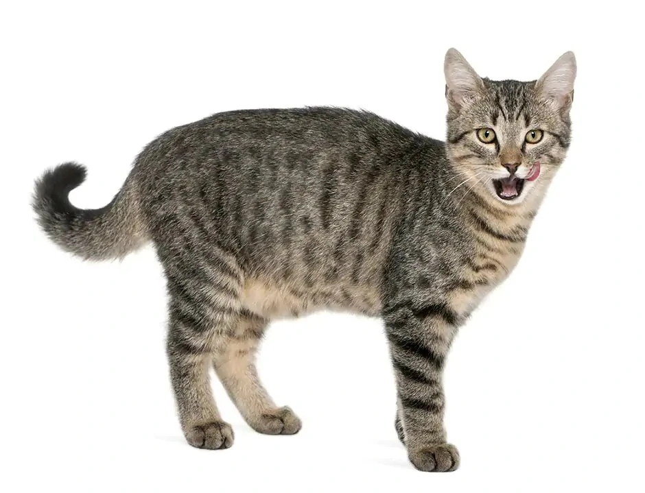

fysieke kenmerken
- dikke, oranjeachtig grijze haar met witte plaatsen (bv boven en onder de mond)
- ronde oren
- kort, dikke staart
- ronde pupillen
- slechte renners
manoel naast een huiskat
 

karaktereigenschappen
- solitair
- bergen
- maken rare geluiden
- territoriaal
manoel geluiden